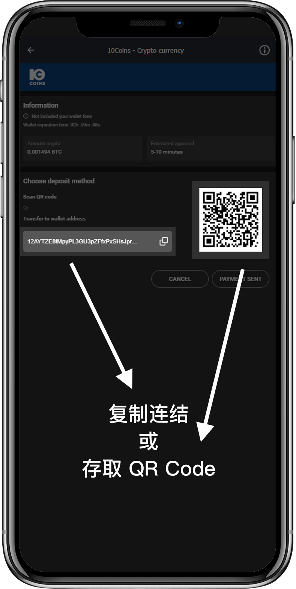

什么是10Coins十通币？
10COINS十通币可以让您透过加密币进行存款，将您的比特币(BTC/BSV)，以太币(ETH)，莱特币(LTC)，柚子币(EOS)转换成10Coins 十通币进行存款。
10Coins十通币为何安全？
加密币交易不受任何机构监督或影响，匿名交易也意味着安全性高。在10Bet十博提款时，您也可以在没有使用加密币存款的前提下，把现金转直接透过10Coins十通币进行提款。

10Coins十通币存款步骤
只需要透过简单的流程，就完成快速又安全的存款。

进入十博10coin存款页

开启支付工具

设定金额
进入转帐
相关十博10coin规则与条款，
请点击查看
- 您将无法转换或兑换到其它钱包/币种。
- 您明白和认同10Bet十博不能被视为金融机构，因此您无法获得任何利息。
- 如果您的账户因任何原因重复付款、或重复处理了2次以上的提款要求，因此导致账户透支，您同意补偿10Bet十博任何透支的金额。
- 如果10Bet十博认定您采用“双重支付”的方法获益，所有未结算注单和盈利将被视为无效。如果当您赢了投注，却又在确认了区块链的存款后进行提款，您所赢得的投注将被即时没收，您的账户也将永久性被关闭。除此以外，我们将有权利关闭任何有相关联的账户。
- 任何加密货币通过十通币兑换时，您有可能被收取在区块链上确认交易的费用。这被视为矿工费，10Bet十博将不会退还。
- 最低存款额为100元人民币，您将通过加密货币的支付来换取人民币，并以人民币进行游戏和投注。系统不接受小于100元的存款。
- 提款时，我们首先需获得最少3个区块链确认您之前的存款。如果您的存款产生了矿工费用，有关的确认过程将需要好几个小时才能完成。
- 最低提款额为100元人民币。系统不接受小于100元的提款。
- 所选的支付方式不直接支持您的账户币种 CNY。 向支付供应商提交之前，我们会将输入的金额换成 USD。最高提款为1万美元。请注意：目前提款只提供BTC作为出款货币。
- 10Bet十博保留权利要求您满足5倍的流水要求，尤其是当我们发现您使用我们的转账服务，做为实际障眼其它交易的方法。
- 作为线上交易进程的一部分，一般需要5分钟的处理时间，而这段时间的汇率应保持不变。如果交易在5分钟后处理，相对的汇率将有所变动，也就会产生多付或是少付的情况。此外，您必须输入您想兑换的金额到加密货币钱包，这段进程也可能会产生多付、或是少付的情况。
- 多付 – 当您支付大于所需完成交易的金额时，支付流程将保持不变，而10Bet十博将会按照所收到的实际金额办理入账。
- 少付 – 当您支付小于所需完成交易的金额时，10Bet十博将按照所收到的实际金额办理入账，而并非原先所申请的金额。如果金额小于最低存款（100元人民币），那么10Bet十博将保留权利不办理入账。
- 所有加密货币将由十通币进行处理。
- 所有加密货币转换至十通币的交易，均被视为最终的转换与交易，无法办理退款或其它用途；而所有情况将按照上述文本阐述。
X